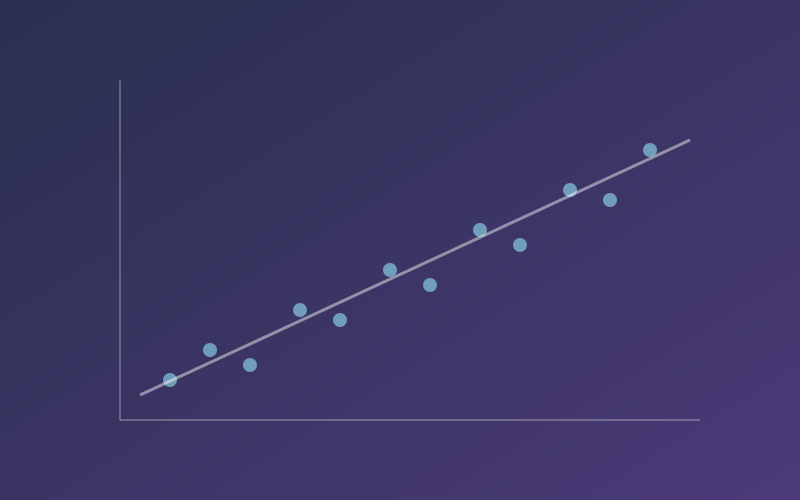
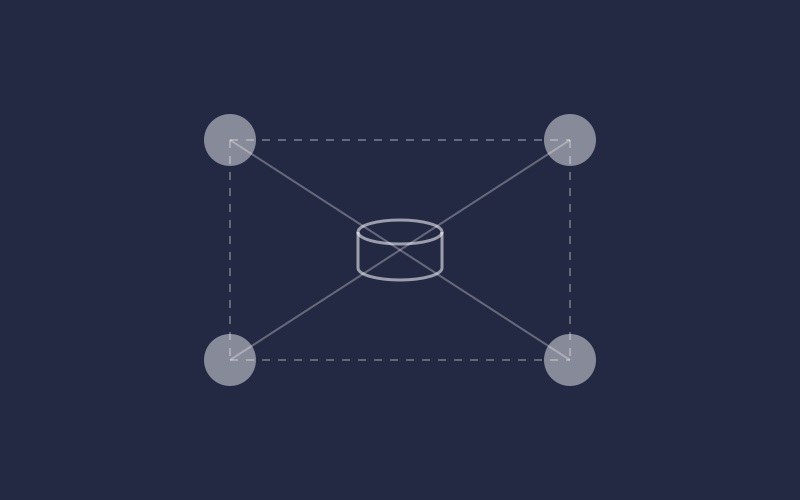
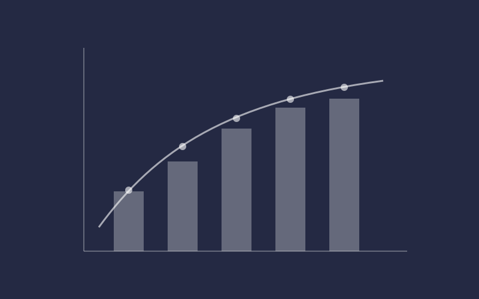
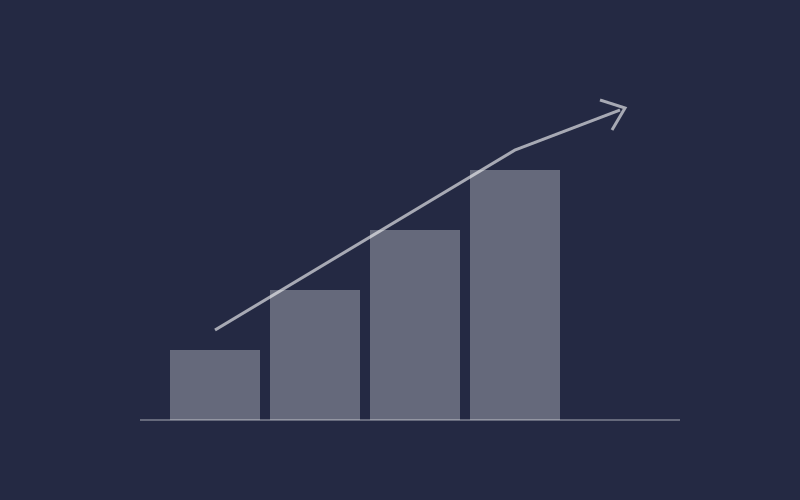
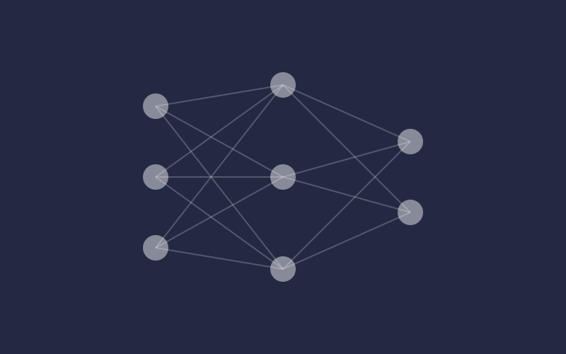
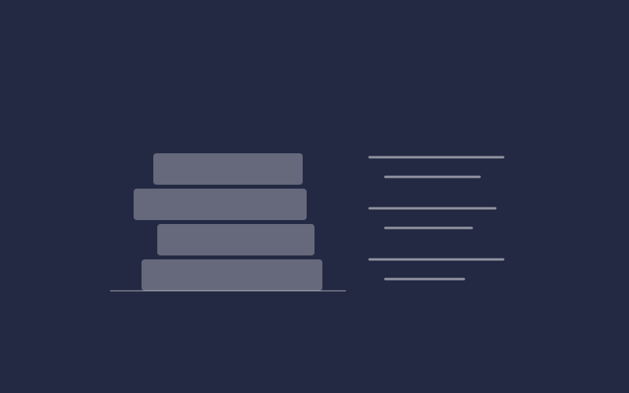

Learning Artefacts
Unit-by-unit evidence: activities, wiki contributions and collaborative discussions

Unit-by-unit evidence: activities, wiki contributions and collaborative discussions

The Unit 6 team project, meeting notes and my contribution to the team

The Unit 11 individual project and its evaluation against the initial proposal

Learning outcomes, feedback, skills matrix and personal development plan

A reflection on my learning, my role in the team and my professional development

All sources cited in this portfolio, in Harvard style
This e-portfolio documents my learning journey through the Machine Learning module. It is designed to be read in order, and each section is backed by evidence from the module.
Evidence from each of the 12 units.
The Unit 6 team project and my contribution.
The Unit 11 project and how it compares with the proposal.
Learning outcomes, feedback, skills and action plan.
What I learned and how I will apply it.
Sources cited throughout the portfolio.